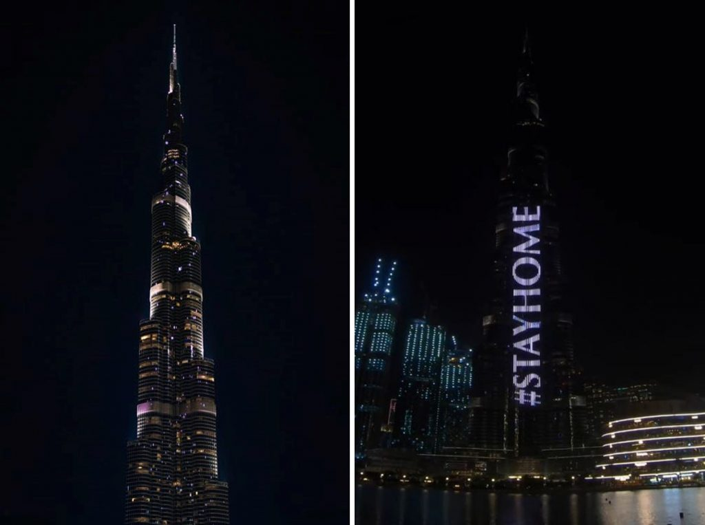

Hikikomori: The Postmodern Hermits of Japan | Warscapes
 Skip to main content Warscapes Toggle navigation Ideas Blog Columns Opinion Reportage Reviews Retrospectives image Art Videos Corona Notebooks literary Literature Poetry Conversations Conversations Podcasts Books Region Africa Asia Australia Europe Latin America & Caribbean Middle East North America About Advisory Board Contributors Donate Submissions Subscribe RSS Ideas Blog Columns Opinion Reportage Reviews Retrospectives image Art Videos Corona Notebooks literary Literature Poetry Conversations Conversations Podcasts Books Region Africa Asia Australia Europe Latin America & Caribbean Middle East North AmericaHikikomori: The Postmodern Hermits of Japan
Opinion Flavio Rizzo June 14, 2016 Nothing in the cry
of cicadas suggests they
are about to die
-Matsuo Bashō
After years of self-imposed isolation, literally having never left his parents’ house, a seventeen-year-old kid in Japan finally walked outside . He was known to the legendary Japanese Internet forum 2channel as Neomugicha . A Dadaist short circuit in the name, perhaps since the name literally means Neo-BarleyTea. Neomugicha hopped on a bus in the town of Saga on the island of Kyushu. After forty minutes on the bus, he stood up, pulled knives out of his jacket and hijacked the bus holding twenty people hostage for fifteen hours. He killed a passenger and stabbed three women in the neck.
After the incident that took place sometime in the year 2000, a panicking Japanese government underlined that there may be up to a million kids just like him: he is a Hikikomori , part of the lost generation of Japanese kids, post-modern hermits, a lost generation of young recluses who never leave their homes and rely on their parents to survive.
Copycats followed from Neouuroncha (Neo-OolongTea) to Neomugishu (Neo-BarleyWine), a stream of 2channel users tried to come up with their own version of potential sensationalist attacks. This is also where the social stigmata and early hysteria around the Hikikomori started to take root.
2channel is the place where a parallel Japan comes to life. It is almost as if the country jumps into a second skin and reinvents itself while engaging with a seemingly endless range of topics. Its impact on popular culture and opinion is of gargantuan proportions. From inciting mass suicide, beating the stock market, imposing (and succeeding) Nike to take down their billboards, all the way to weird erotic parodies, or joyful analysis of poop’s patterns, nothing is taboo. Absolutely everything is covered in the forum. If the Internet became the place to reinvent oneself through the shelter of anonymity, Japan’s 2channel forums are the places where the concept is pushed to the point of vertigo.
And the Hikikomori ’s feeble thirst for life is often born and exhausted within it.
In one of those Tokyo spring days where cherry petals dance madly in the air turning the whole city in a gigantic-verging-kitsch snowball, I walk into my classroom at the University of Tokyo. Today we are discussing Kenkyo , the Japanese virtue of modesty. We try to unlock the intricacies of Japanese cross-cultural communications. My students are engaging and brilliant and as always I am amazed by the amount of insight they are ready to share. After an intense two-hour discussion, I decide to end the class on a light note. “Let us not be Kenkyo for once, forget about your ‘modesty state of mind’ (as one of my students put it) and tell me something you do better than everybody”. They laugh, some turn red and then, in order to avoid straight answers, I hear all kinds of spin offs “I am very good at being the ugliest in the class”, “I am very good at knowing everything about obscure sports”, “I am great at elevating others”, “I am the best at being uglier than the ugliest in the class”. And then one student began with “I am good at… at… at…” He could not articulate it. After a few awkward moments of silence he stands up, goes to the farthest corner of the classroom and mimicking the presence of four walls with his arms he says, “I am great at isolating myself.”
In a country where social misfits see their weirdest, and sometimes, sweetest desires fulfilled by an ever growing industry that commodifies everything from manga massage parlors to howls cafes, the Hikikomori becomes an obscure alternative to mainstream society.
Illustration by Yuta Onoda for Wall Street Journal
Image via Monty Sponge blog
An identikit of an average Hikikomori : likely a school dropout, may or may not have specific skills, most likely unemployed unless he has an online gig of sort, lives in his room in his parents' house, never steps out of the house, spends the day daydreaming, reading, roaming the internet, flipping TV channels, floating in his room.
And the typical image: a meal left at the door by his parents. Another: the room’s window covered with all sorts of rags and papers to avoid light filtering through. This self-reclusive nest is strewn with few possessions: books, video games, music instruments, plastic bottles, a random aquarium, a TV set, an empty bento box. In their enclosed space objects come to life and assume their own order and independence; becoming worlds within worlds. And here resides the Hikikomori like a mythological god in his own tomb.
The Otaku Connection
To some, the Hikikomori is an extension of the Otaku culture: somebody self-consumed in his interests, a compulsive collector of anime and manga memorabilia, lacking basic social skills and with a skeleton in the closet: the Akihabara Massacre . In 2008 a man killed seven people and stabbed ten more in the heart of Akihabara, a neighborhood in Tokyo entirely devoted to anime and manga, ground zero of Otaku culture.
For a country that is largely atheist, going to Akihabara is the closest experience to going on a religious pilgrimage in the middle of the vertical madness of Tokyo. After the massacre, just like with the Neomugicha incident, a ripple effect of social stigma hit the Otaku community. Much like the Hikikomori , Otaku is one of those puzzling Japanese post-modern cultural expressions. Often middle aged men can be seen at street events awkwardly dancing in sync to improbable songs sung by semi-improvised teenaged girls with short skirts and a Lolita aftertaste. You can see them incarnated in the ultimate adoring fans of the idol girls groups AKB48 or the Takarazuka . Both groups are entirely made out of women, the first are adolescents projecting a myth of purity, the second a theatre group rotating around an all-women cast interpreting men’s roles. The fans take this playfulness around gender very seriously finding the fictional context a safe zone of acceptance of gender bending that is otherwise pretty invisible in Japanese society.
The Akihabara neighborhood of Tokyo, a popular gathering site for otaku.
The complexity of the Otaku obsessions with collecting and idolizing is said to have a cultural relation, a crossroad of sort, to the Hikikomori . Both are born out of marginality and a desire for self-expression beyond the given boundaries of Japanese society and some Otaku indeed turn Hikikomori . But the Hikikomori tap into a larger sphere of revolt and, at times, self-destruction.
Within the Hikikomori context, marginality finds its expression in the ultimate slow deliberate implosion, social withdrawal, or better reclusiveness that becomes a spark for an involuntary form of counter-culture. This instance of rebellion is born within a desperate and genuine desire to fade and yet be alive and, most of all, connected while being disconnected.
Yes, the Hikikomori is the grand ball of contradictions, tomorrow’s dreams and nightmares are calcified together. For some Hikikomori , technology becomes a final connection to life, one that is manipulated by a fantasy that, while sinking into pain, it frees itself in suspended narrations of virtual love, communities and cyber identities. Implosions, distance from the over-exposure of contemporary life, degree zero of human interactions, anonymous virtual connection, giving form to sexless love, tearing apart imposed models of beauty; the Hikikomori find their center in the fluctuation of these narratives.
Our consumer universe thrives on the addictive mind. The greatest achievement of our schizophrenic contemporary culture is the selling of distraction; while it claims to love life, it starves it with super imposed addictions. The Hikikomori spark out of the in-between space of this specific culture of addiction and distraction. It is almost as if they inhabit the nowhere where we all come from, tapping into that suspended space of non-action that from time to time keeps us company. The fundamental difference is that they make it the center of their lives.
Seclusion as a National Foundation
It may be compelling to notice that self-seclusion is not new to Japanese history. The nation even institutionalized it during Tokugawa shogunate with its Sakoku edict in 1635, the closing to the outside world and the entire nation entering two centuries of semi-isolation. Japan’s love affair with isolation went as far as producing a literary genre, the Heian Period’s Recluse Literature with masterpieces like Yoshida Kenk ō ’s Essays on Idleness , Kamo no Ch ō mei’s An Account of a Ten-Foot-Square Hut and poems by Saigy ō H ō shi point to a fascination to these ideas. These maverick thinkers and poets were unplugging from the heaviness of societal duties in a radical way, well beyond the tendency to join a Buddhist monastery. Ch ō mei writes:
Those who are powerful are filled with greed; and those who have no protectors are despised. Possessions bring many worries; in poverty there is sorrow. He who asks another's help becomes his slave; he who nurtures others is fettered by affection. He who does not, appears deranged. Wherever one may live, whatever work one may do, is it possible even for a moment to find a haven for the body or peace for the mind? (…)
Knowing myself and the world, I have no ambitions and do not mix in the world. I seek only tranquility; I rejoice in the absence of grief. (Trans. Donald Keene)
In Japan, renouncing the world does not seem to be only a human affair. The Hikikomori have their own foundational Goddess. In the Shinto tradition we find the myth of Amaterasu - a sun Goddess who withdrew and hid in a cave leaving the world in darkness. Amaterasu is the bright sun we find symbolically represented in the Japanese flag. The first Emperor of Japan declared descent from her light, but it is her darkness that has been claimed by the Hikikomori . Afraid and concerned for her brother’s tyrannical behavior, Amaterasu at some point is said to have abandoned the kingdom of her light and embraced the shadows of a rock cave, where she remained cloistered until a scheme organized by other Gods and Goddesses lured her to come out. Today many Hikikomori use her name and its variations as online aliases. The clash could not have been greater: a foundational myth for both the nation and its ultimate outsiders.
The Clinical Hypothesis
Dr. Tamaki Sait ō is the person responsible for the initial clinical understanding of the phenomenon. In his book Adolescence Without End, Sait ō points out that this phenomenon cannot be defined just as a form of depression. He also seems to be particularly concerned with the episodes when the Hikikomori turn violent.
The phenomenon begins in the late eighties when the Japanese economic bubble burst but then soon entered a boom that continues until today. According to the first surveys of the Japanese government, at the beginning there used to be at least 700,000 Hikikomori , mostly men but women were also affected. This number is growing. It is thought that the cases among women may be under estimated because of the social acceptance of women to stay home, making their potential withdraw invisible.
As time went by the average age shifted, the first studies in the late eighties pointed out to about 21 years of age. However, now it is believed that the average Hikikomori is around 31 years old. The Hikikomori do not seem to be linked to any specific disorder. For some, the symptoms of Asperger's play a role, others lean on the Diagnostic and Statistical Manual of Mental Disorders ( DSM4 ) and point to a more generic "social avoidance disorder," but there is no cohesive diagnosis. In dealing with the issue of Japanese social withdrawal, experts tackled behavioral and psychiatric questions; from school non-attendance, violence at home, the lack of social skills all the way to basic phobias of interpersonal relations and apathy. Much emphasis has been given to Erickson’s Identity Diffusion Syndrome. In his work, Dr. Akhtar helps us to unlock the syndrome breaking it down into six basic traits: “1) contradictory character traits, 2) temporal discontinuity in the self, 3) lack of authenticity, 4) feelings of emptiness, 5) gender dysphoria, and 6) inordinate ethnic and moral relativism.” Indeed many of these pointers are important to contextualize and start to understand such an acute widespread social muddle. But keeping in mind these crucial perimeters, as time goes by it is becoming increasingly clear that beyond a few cases with an underlying psychiatric condition, the majority of cases have roots in the social sphere. It is also starting to become apparent that not every Hikikomori is violent and that the early social stigma linked to those early extreme cases needs to be addressed.
Can we question the Hikikomori phenomenon beyond these given perameters? Can we go past the first psychological/sociological analysis that accompanied the early signs of the phenomenon? Is there a connection to language?
Cultural Frameworks
It has been said to the point of redundancy that Japan is a sort of Galapagos of culture, from tradition to hyper contemporary trends, what happens in Japan seems to be grounded in a unique sensitivity directly anchored to both the geography of the nation and the political need and desire to be sheltered. In this sense it is essential to place the Hikikomori phenomenon within defining cultural and historical tenets in Japan. So on one hand it is crucial to point out to a culture bound syndrome, what seems to be a specific ancestral fear of interpersonal communications born within the specificity of the Japanese experience, ( Taijin kyofusho ) and on the other it is also essential to adventure into new leaps.
Here is one of the many cultural short-circuits for this lost generation: the Japanese concept of Gambari , meaning to do one’s best and endure difficult situations in order to achieve one’s goals. It is considered one of the highest virtues in Japan, and it is one against which the very essence of the Hikikomori clashes definitively.
The concept seemed to have reached new inaccessible levels of muscularity with Prime Minister Shinzo Abe and his Abenomics , an aggressive hyper-productive soul-defining economic policy that tried to pull Japan out of its decades long recession. Japan defines identity as an extension of the association with groups, from the company for which one works all the way to the kind of hobby one undertakes (and the Japanese bring the whole concept of “hobby” to unreachable levels of professional madness with both jaw dropping talent and consumer obsession with gear.) So the withdrawal from society can be read as an attempt to escape this collective understanding of identity. Now matching this national inclination with Abe’s attempt to reach hyper productivity implies inflating this specific form of alienation to new levels. The potential societal rewards that come with the Gambari spirit through cozy feelings of belonging and the direct contribute to the nation’s struggle, represent for the Hikikomori an initial severance from the community. This appeal to productivity becomes a strong fertilizer for the concept of Gambari . It is easy to imagine how it could lead to further estrangement and isolation along with a potential new generation of Hikikomori .
This specific crossroad links directly to another defining concept when it comes to Japanese sensitivity, Sekentei , loosely translatable as reputation, a sort of social appearance but a specific one that rotates around the psychological pressure that comes from within the community. Often the Hikikomori stem out of a refusal of this concept. If we were to trace back the beginning of the isolating process, for some it is probably those defining moments in which Sekentei , again a respectability of sort, was lost or scarred at some point in their lives. This is often traced back to school incidents or episodes of bullying. In the generalized understanding of Sekentei, the withdrawal from social interactions and its corollary of seclusion implies yet a new layer of loss of this sense of respectability. This new tear effectively creates further distance between the Hikikomori and mainstream society. The overall concept of belonging is devastated by over imposed layers of meaning and cultural understandings of one’s place in society. In this sense the Hikikomori is effectively trapped in a cage of social constructionism.
This clash crystalizes in the concept of Aimai . In Japanese the word Aimai covers the grey zone of ambiguity, obscurity, indistinctness in every day interactions and communications. The Japanese are generally tolerant of ambiguity and often dwell on it. Ambiguity is said to be a crucial tool when it comes to avoiding conflicts and, by extension, it fosters harmony. But in the Hikikomori context this zone of ambiguity is the foundational pillar that pushes progressively into the obscurity and indistinctness integral to the phenomenon’s roots. In other words Aimai once inserted into this new post-modern context, becomes the seed that leads into the larger and darker frame of the Hikikomor i.
Vagueness here becomes crucial in creating a rapture that will eventually lead to withdrawal. Stemming out of these problematic cultural hiccups, this secluded generation found shelter in a sort of resolute inconclusiveness, a complexified form of inconclusiveness that puts distance between them and convenience; between them and the pre-programmed societal duty born within the allure of convenience.
In response to an article that appeared in Japan Today that once again underlined the clichés of violent Hikikomori, a reader launched into a confused and moving stream of consciousness:
“I am a Hikikomori . I have been for a number of years. I really do not like this 'tough-love' business at all! We have become like this due to mounting stress and pressures! The education system really needs to go to the hangar for a complete overhaul. Seriously. The rote memorization and monotonous manner of teaching is so outdated! It really is little wonder many of us turn Hikikomori ! I could have chosen crime or worse, suicide. But I didn't! I chose self-incarceration where I live. It is lonely, boring, sad, no love, no sex, and as we humans need contact with other people, I will be the first to admit that it is a damn shame to have to be forced into this position. Most of us like myself included are non-violent. It is a shame to hear and learn that some of us have resorted to violence. We need more critical thinking sort of education, with a greater flexibility and tolerance. That is the Buddhist way of doing things. Perhaps our education system lost that end. PLEASE stop blaming us! We have been victimized by YOUR system! We are your children! We are indeed the future of Japan! Thank you!”
The reference to the educational system and its failures should also be at the center of any attempt to unlock this enigma. Standardized, strict and verging-on-inhuman entrance exams are only the tip of an iceberg that makes the idea that “students should compete against each other” central to teaching practices. A theory reinforced by the “grading on a curve” system where teachers are forced to squeeze and adjust grades often at the expense of those very students who do not abide to the survival of the fittest tour-de-force that is imposed on them. A pedagogical boomerang that not only disregards decades of critical pedagogy, but ends up being one important reason for these young students to turn Hikikomori .
Also interesting is the appeal to this idea of being the future of Japan, particularly intense here given how insanely rapidly the population is shrinking: it is predicted that people over 65 and above will make up about 40 percent of the total Japanese population by 2060. Not only that, the government forecasts that Japan’s population, about 127 millions at the moment, will decrease to around one third over the next 50 years. This would mean that there will be just about 43 million Japanese by 2110. The Japanese have been drilled with this foreshadowed nightmare future scenario to the point of redundancy.
The Hikikomori in Book and Film
In the book Shutting Out the Sun by Michael Zielenziger, one passage is particularly striking. A mother trying to unlock the mystery that surrounded her son and the seclusion he chose for himself says, “ Hikikomori are kids who value the intangibles (…) they can see the intangibles but cannot speak out because there is no place in Japanese society that allows them to. So a person who challenges, or makes a mistake, or thinks for himself, either leaves Japan or becomes a Hikikomori ”. That “no place” is forcefully carved out within the house and within oneself; the “intangible” that a pragmatic society does not value, those moments of suspension, vacuums that we are ready to fill with hyper activity as opposed to liberating them into the non-action of the imaginative power. If we play, and limping along, we lean on the idea that the unconscious is not only within ourselves but also that there is an unconscious generated within society, the Hikikomori can be understood as the materialization of our societal unconscious.
The Hikikomori phenomenon is now finding a form of narrative legitimacy in cinema, manga and pop culture. It is creating its own iconography. The novel Welcome to NHK (acronym for Nihon Hikikomori Ky ō kai or The Japanese Hikikomori Association ) plays with the name of Japan national broadcasting giant (NHK) and a story of a conspiracy to create the Hikikomori . The novel became a manga series and a twenty-four episodes anime series. Since then Hikikomori characters multiplied in anime and manga: Rozen Maiden, Serial Experiments Lain, Tatami Galaxy, Anohana: The Flower We Saw That Day , to name a few. We now also have a Hikikomori Pokémon , dozens of blogs, some like the Hikikomori Traveler even overflow into straight forward oxymoron, and most of all several movies, a few random titles: Tokyo!, Left Handed, Tokyo Plastic and the recent American Hikikomori. In the west in the past three years at least three novels came out tapping into the Hikikomori narrative, Kevin Kuhn wrote his Hikikomori , Jeff Backhaus’s Hikikomori and the Rental Sister , and in Germany Milena M. Flasar wrote Ich nannte ihn Krawatte ( I Called him Necktie .)
Postmodern Hermits
Given this enlarging context, the Hikikomori term is rapidly becoming a trope that ignites different meanings. The initial understanding limited to a clinical analysis may start to be obsolete or, at the very least, it needs to be expanded beyond this first framework. Hikikomori now dances around concepts of counter-culture, hermitage, a sort of sweet awareness of being adrift as much as around the sphere of potential psychological disorders. The word redefines the borders of previous understandings of isolation. So self-inflicted painful isolation becomes a confused extension of spiritual practices and the hyper connectivity that comes with computers nullifies the idea of isolation as degree zero of experience. It is in these juxtapositions of concepts that are apparently not in dialogue, that lies something crucial to unlock such a specific contemporary sensitivity, one that goes well beyond the extreme cases making the headlines. While tackling issues of revolt, the philosopher Julia Kristeva underlines “when revolt exists our spectacle oriented society marginalizes it as one of its tolerated alibis.” And so it is that the Hikikomori is instantly turned into a scarecrow; but while it is marginalized, the multiplication of media outlets gives it back to us in its diverse incarnations; its reinvention is mostly done without intention.
Extreme withdraw challenges the concept of memory; as years turn into decades memory is formed within four walls and a potential computer connection. Gaston Bachelard in his The Poetic of Space points to an essential overlapping of personal history and ancestral memory, one that can give us new keys to further understand the complexity of the Hikikomori :
“If beyond memories, we pursue our dreams to their very end, in this pre-memory it is as though nothingness caressed and penetrated being, as though it gently unbound the ties of being. We ask ourselves if what has been, was. Have facts really the value that memory gives them? (…) Did they ever exist? Something unreal seeps into the reality of the recollections that are on the borderline between our own personal history and an indefinite pre-history (…) thus, on the threshold of our space, before the era of our own time, we hover between awareness of being and loss of being. And the entire reality of memory becomes spectral.”
Alone locked within four walls, “hovering between awareness of being and loss of being” the Hikikomori creates a new context where “facts” lose value and “nothingness caresses and penetrates being.” It is within this concept of memory that the apocalyptic vision of the Hikikomori takes root. In The Writing of the Disaster , Maurice Blanchot underlines something crucial: “The disaster is related to forgetfulness – forgetfulness without memory, the motionless retreat of what has not been treated – the immemorial perhaps...” The “motionless retreat” and the “immemorial” as the ultimate scare: cultural extinction. A fear that, given the numbers on the shrinking population mentioned earlier, permeates Japanese society. The ghost of the collective loss of memory dances around the country. Japan’s exponential love for consuming accelerated this process with the multiplication of desires and commodities. At the same time the Japanese government seems to be unwilling to connect the dots between over consuming and what it is left behind in the process, namely its most radical incarnation, the self-reclusion of a chunk of its population.
But above all the Hikikomori phenomenon seems to ask one old yet still fundamental question: does what we know limit what we can imagine? In this sense the Hikikomori seem to initiate a trend that appears to be nothing more than the extension of an old archetype: retreating from the world, hermitage. What elements go into the creation of mythopoetic spaces and experiences and how are those interpreted and transmitted across different cultural, linguistic, and formal boundaries? The act of rising up against a given/imposed reality and the act of severing contact with the outside has to be considered both as a propulsive force just as much as a refraining impulse, this is a nodal point. An invisible presence, a pointer to a cluster of knots that ultimately are present within ourselves whether or not we acknowledge them.
It is essential to understand that it is absolutely impossible to define the Hikikomori in traditional terms. As new meanings and perceptions are constantly molded around the Hikikomori , it is time to give a new breath and a new spin to the process of understanding it.
A Tokyo Moment
As I laze my day away in a sleepy corner of the Inokashira neighborhood in Tokyo and I get closer and closer to collapse in a desperate love for this country, I cannot help but notice that all my neighbors, no exceptions, have the curtains closed. It is a bright spring day and an intense warm light hits my windows, the only ones with open curtains. In spite of living in a city with 36 million people and on a road where every tiny space has a house in it, you can spend hours without hearing a fly buzz. It feels like being in a country road somewhere in Vermont. My neighbors slip in and out of their houses so quietly that when caught in the act, they seem disoriented and I feel like I just stole a crucial piece of their soul. They quickly disappear around the corners of my neighborhood with a mix of grace and the flying lightness of a thief.
This is more or less when I started to be intrigued by such generalized behaviors. Is it a delicate balance of people respecting each other's spaces in a city that otherwise would implode? Are the Hikikomori an error of sort, a spin off of recessions and bubbles gone rancid? Or is this phenomenon a pointer to something else? As I try to understand, it is becoming increasingly clear that it may be something else. A “something” that I start to recognize as familiar. As I study it further, I realize that I am starting to be part of it, tapping into the ancestral necessity to retreat.
Meanwhile the Hikikomori phenomenon through its anime and manga incarnations hit the road: South Korea and China, the new destinations. As the social implications keep scaring the mainstream, I like to think of them as a band of mavericks, adrift yet confusingly turning their backs to the arrogance of mediocrity.
Flavio Rizzo has a Ph.D in Comparative Literature from the City University of New York and an Italian Laurea in Cinema Studies from Roma Tre University. He taught Comparative Literature and Film Studies at the City University of New York. He is currently Assistant Professor in the Center for Global Communication Strategies of the University of Tokyo. He is a writer and filmmaker. Among other works, he has a documentary on filmmaker Pier Paolo Pasolini (recognized with the Cinema Avvenire Award at the Venice Film Festival) and one on the Coca Wars in Bolivia.
Image ©Justin Haynes on Flickr
Topics: Japan Hikikomori otaku recluse Exile hermit youth Region: Asia